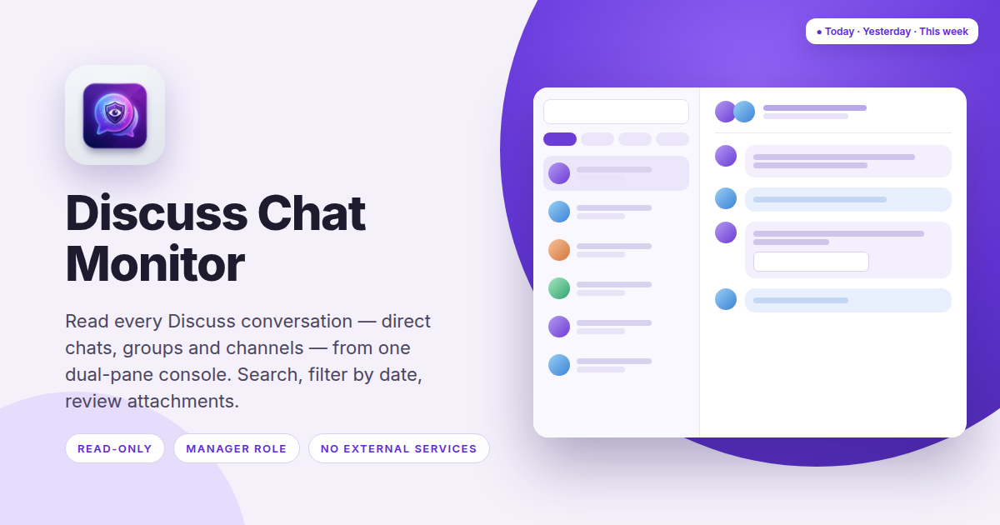

Discuss Chat Monitor · Odoo 18
Give managers and compliance officers a dual-pane view of all Discuss activity — direct chats, group chats and channels — with search, date filters, full transcripts and attachments. Nothing to configure, nothing leaves your server.

How it works
Chat Monitor is a separate app in the Odoo menu, visible only to users in the Chat Monitor Manager group. It reads the messages Odoo already stores — it does not copy, forward or alter them.
Every conversation, newest activity first, with participant avatars, message count, last message time and a one-line preview.
Switch between All / Direct / Group / Channel, pick Today, Yesterday or This week, and search by conversation title or participant name.
The full thread in the right pane: author, avatar, local-time stamps as in Discuss, formatted message body and downloadable attachments.
Features
Direct messages between two users, private group chats and public or private channels are all listed — including conversations the manager is not a member of.
Filter the list by conversation type and by activity date. The date filter also trims the transcript, so “Today” shows only today's messages of that thread.
Type a name and the sidebar narrows as you go — matches on the conversation title or on any participant's name.
Files shared in a conversation are listed under the message with their name and type, and can be downloaded with one click.
Timestamps are shown in the manager's own timezone in the same style as Discuss: “Today at 03:11 PM”, “Yesterday at 05:00 PM”, or the full date.
A refresh button reloads the open thread and the sidebar counters; the view scrolls to the latest message automatically.
Access & privacy
Installing the app adds one security group, Chat Monitor Manager, in its own category under Settings › Users. Only members of that group see the Chat Monitor menu; for everyone else Discuss behaves exactly as before.
Managers in the group can read every Discuss conversation on the database, including private direct chats. That is the point of the app — and also a responsibility. Make sure monitoring is covered by your workplace policy and, where required, that staff have been informed.
The console is strictly read-only: it cannot send messages, join channels, edit or delete anything. Data stays in your Odoo database; no third-party service is contacted.
| Version | 18.0.1.0.0 |
|---|---|
| Editions | Community and Enterprise |
| Depends on | base, mail, web |
| Access | Chat Monitor Manager group |
| Data | Reads existing messages; adds no tables to Discuss |
| Licence | OPL-1 |
FAQ
The app shows no indicator inside Discuss. Informing staff is your organisation's responsibility under local employment and privacy law.
No. It covers Discuss conversations only: direct chats, group chats and channels. Chatter on invoices, tasks and other records is out of scope.
No. The console is deliberately read-only. To take part in a conversation, use Discuss as usual.
Yes. The sidebar shows previews only; the full transcript loads when you open a conversation. Date filters keep long-running channels manageable.
Nothing. The app uses only Odoo's own RPC calls between your browser and your Odoo instance.
The console lists all Discuss conversations on the database regardless of company. Restrict the manager group accordingly if you need per-company monitors.
Support
We answer within one business day and ship fixes for confirmed bugs free of charge for 90 days after purchase.
Discuss Chat Monitor · © Albatross · Licence OPL-1